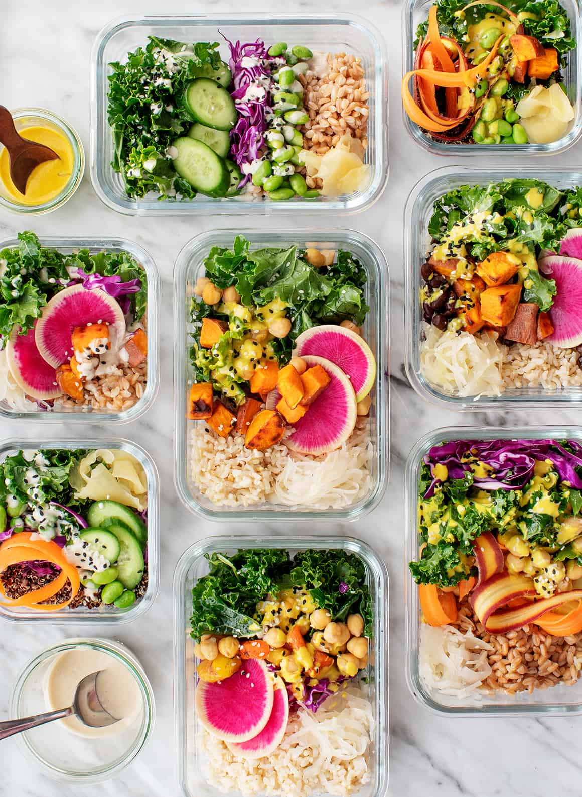

Meal Planning Made Easy
Meal planning can save you time and money, while helping you stay on track with your health goals. Let us help you organize your meals for the week with easy-to-follow templates and tips.
How to Get Started
Start by thinking about what meals your family enjoys. Then, plan for a mix of simple, healthy dishes that can be cooked in advance. Below are some tips to get you started:
- Plan for 5-7 meals per week: Include breakfast, lunch, dinner, and snacks.
- Shop smart: Create a shopping list based on your meal plan.
- Prep ahead: Prep ingredients or cook in batches to save time later in the week.
Meal Planning Template
Download our free meal planning template to make it even easier to stay on track. Print it out and fill it in each week!
Download Template 